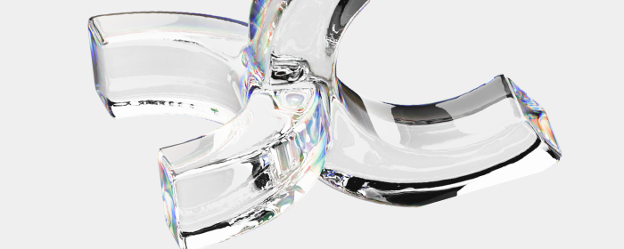

[ ИИ — не враг: как мы учимся работать вместе ]
Искусственный интеллект уже стал частью повседневной работы. Его используют для анализа информации, подготовки текстов, генерации идей, прототипирования и планирования. Он ускоряет процессы и снимает часть технической нагрузки.

Формируется новая модель работы: человек задаёт направление, проверяет результат и принимает решения, а алгоритмы помогают обрабатывать данные
и выполнять повторяющиеся задачи. Постепенно появляется навык формулировать точные запросы и оценивать качество полученного результата.
Фактически формируется новая грамотность — умение работать вместе
с алгоритмами. Работа с ИИ становится обычной практикой, как когда-то работа
с поисковыми системами или офисными программами.